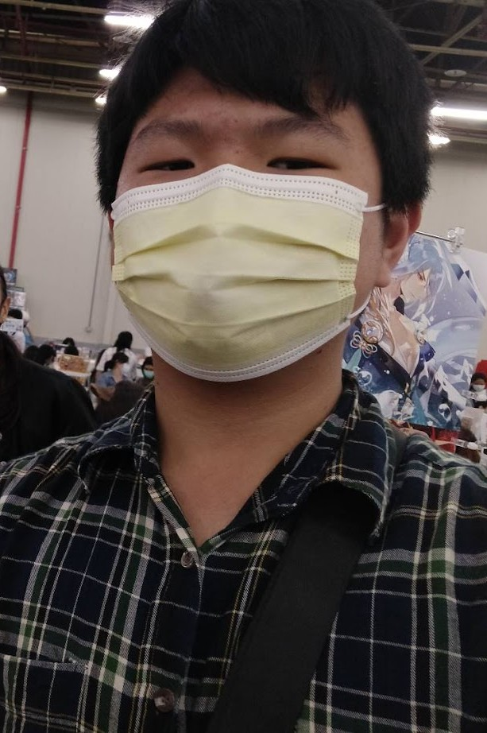

[國立勤益科技大學] - [智慧自動化工程系]
學士學位
相關課程：程式語言 機器學習
2024年 9月 - 2028年 6月
(預計畢業)
(預計畢業)

你好！我是翊瑋，目前就讀勤益科大智動系三年級，在學期間成績也不算太優異，水平大概在中等偏下。
簡單介紹一下我在學期間的特殊表現，在大二時曾協助教授撰寫了一篇SCI期刊，雖說只是將教授的研究成果統合起來寫成一篇期刊，但從中也學習到氫能相關的知識。
最後在大三時，我決定以氫能為主題去做我的專題，在專題中，我的身份主要是最佳化程式與實驗相關，未來若有機會也將會投出一篇國際研討會期刊。
程式語言:Python
其他技術:Discord Bot 開發 (discord.py), Linux 基本操作 (Oracle Cloud)
音訊處理:Cakewalk Sonar (自學混音技術)